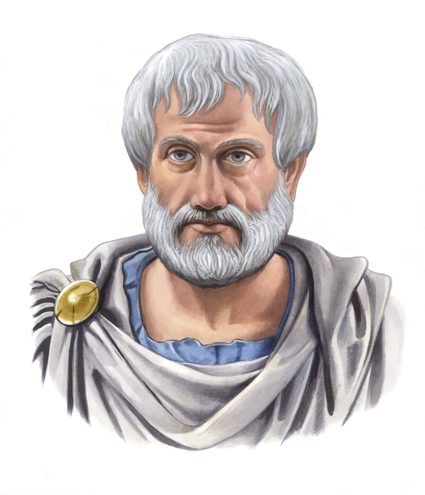
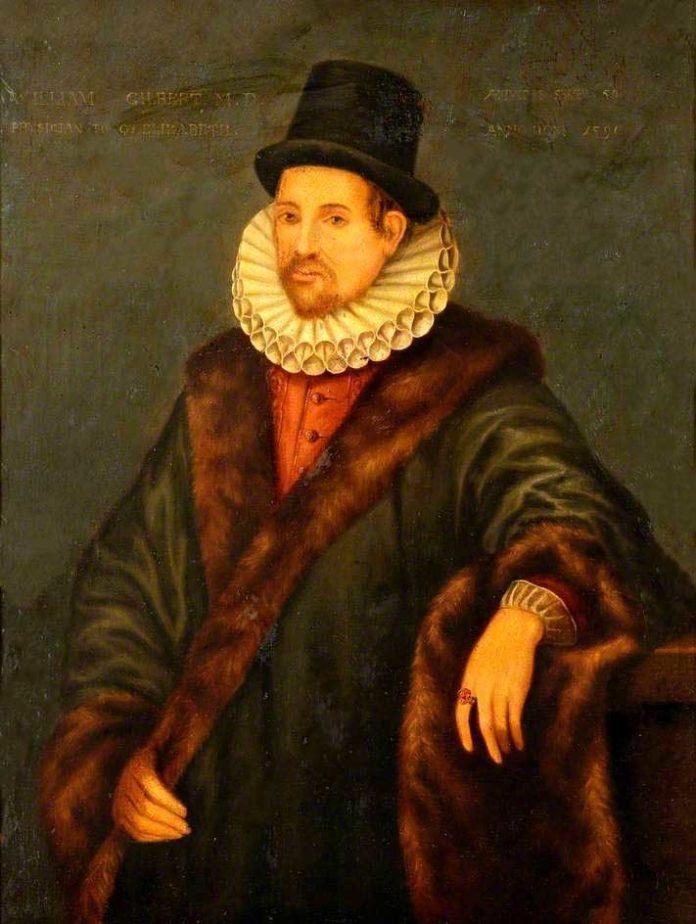
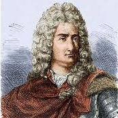
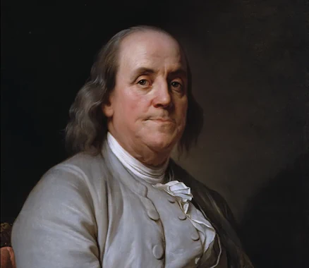
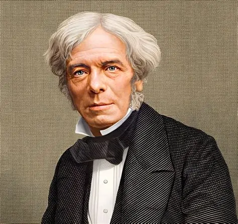
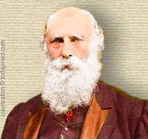
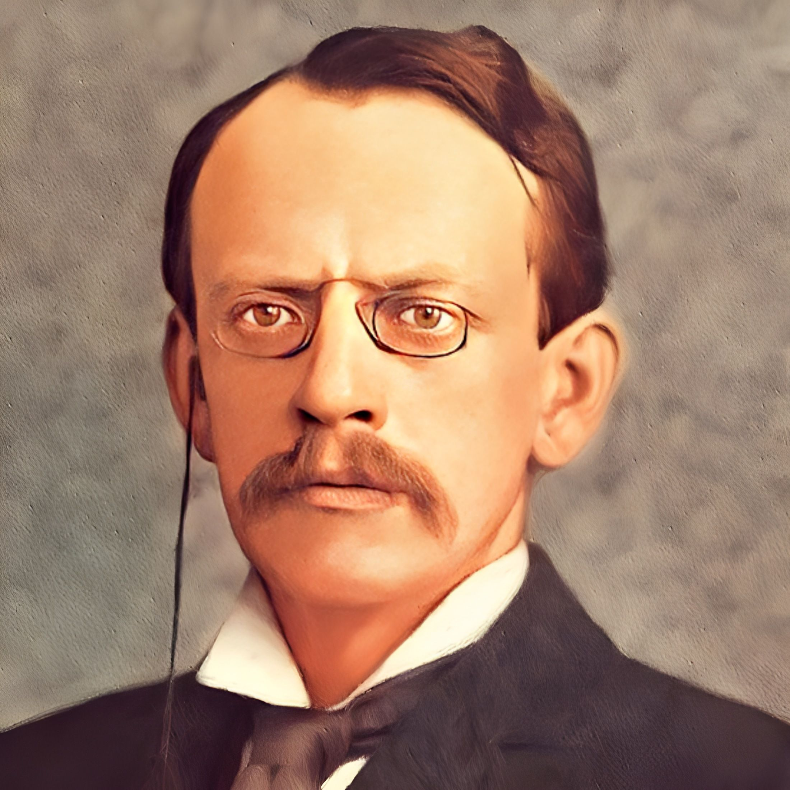
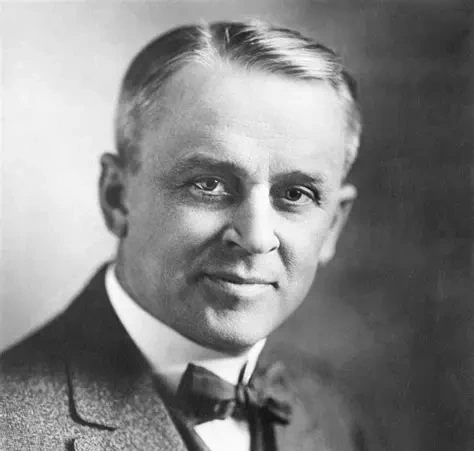

De Thales ao elétron: uma jornada histórica em que observação, experimento e teoria se encontram para explicar a carga elétrica.
Do âmbar aos experimentos que revelaram o elétron, a quantização da carga e sua natureza ondulatória.
Uma abordagem para transformar fórmulas em história, conflito científico e intuição física.
A eletrostática não precisa começar pela equação. Ela pode começar pelo percurso que a ciência faz quando encontra um fenômeno estranho.
Algo chama a atenção na natureza e pede explicação.
O efeito é reproduzido em condições controladas.
Uma ideia organiza o que foi observado.
A matemática passa a descrever o padrão.

A palavra grega (ἤλεκτρον) para âmbar, raiz histórica do vocábulo elétron.

Uma forma de nomear materiais eletrizados com comportamento semelhante ao âmbar.
Charles du Fay percebeu que a eletricidade não era um único estado: havia dois comportamentos fundamentais em jogo.

Associada ao atrito em vidro e pedras preciosas.
Associada ao âmbar, à seda e a outras resinas.

Franklin propunha que um corpo ficava positivo quando possuía excesso do suposto fluido elétrico.
A falta desse fluido explicaria o estado negativo.
A escolha dos sinais foi arbitrária, mas permaneceu. Por isso ainda usamos a corrente convencional indo do positivo para o negativo.

No século XIX, Faraday muda a pergunta: em vez de cargas agindo a distância no vazio, o próprio espaço passa a ter papel físico.
As cargas não precisariam agir instantaneamente umas sobre as outras sem mediação.
Faraday imaginou o espaço preenchido por uma estrutura capaz de orientar a força elétrica.
O espaço ao redor de uma carga fica modificado e pode agir sobre outras cargas.

Muitos cientistas acreditavam que a eletricidade era uma vibração em um meio invisível que preencheria o espaço.
Outros defendiam que os raios catódicos eram um fluxo de partículas carregadas, algo material e mensurável.
Em 1891, George Johnstone Stoney introduziu o termo "elétron" primeiro como unidade de carga, antes da descoberta física da partícula.

O elétron deixa de ser hipótese de carga e passa a ser constituinte físico da matéria.
1800x mais leve que o hidrogênio.

A descoberta consolidou a natureza discreta (quantizada) da eletricidade com uma precisão impressionante.
Com o desenvolvimento da mecânica quântica, descobriu-se que o elétron também possui propriedades de onda, confirmando a hipótese de de Broglie.
George P. Thomson era filho de J.J. Thomson! O pai ganhou o Nobel provando que o elétron era partícula, e o filho ganhou provando que ele é uma onda.
Observação inicial da atração elétrica do âmbar.
Sistematização do estudo da eletrização por atrito e criação do termo "electricus".
Dois tipos de eletricidade e a convenção histórica dos sinais positivo e negativo.
Introdução do conceito de campo elétrico e das linhas de força.
Descoberta do elétron por meio dos raios catódicos.
Medida precisa da carga elementar e demonstração da quantização da carga.
Comprovação da natureza ondulatória do elétron através de experimentos de difração.
Da observação do âmbar ao campo elétrico de Faraday, a física foi separando três mecanismos: atrito, contato e indução.
Thales viu o âmbar atritado atrair pequenos corpos leves; Gilbert e Du Fay mostraram que o efeito não era exclusivo de uma resina.
Nos experimentos do século XVIII, tocar um condutor carregado mostrou que a carga se redistribui entre os corpos.
Com Faraday, a eletrização sem contato ganhou uma leitura de campo elétrico e polarização.
O atrito não cria carga do nada. Ele desloca elétrons e deixa os corpos com excesso ou falta deles.
O sinal final depende da dupla de materiais, da área de contato e da forma como a superfície é preparada.
A série triboelétrica é uma tabela qualitativa que organiza materiais pela facilidade em doar ou receber elétrons no atrito. Quanto maior a distância entre dois materiais na série, maior tende a ser a eletricidade estática produzida.
| Par atritado | Material positivo | Material negativo | Leitura rápida |
|---|---|---|---|
| Balão + cabelo | cabelo | balão | cabelo está acima do balão |
| Lã + vidro | vidro | lã | vidro está acima da lã |
| Lã + borracha dura | lã | borracha dura | lã está acima da borracha |
| Couro + PVC | couro | PVC | couro está acima do PVC |
A série é qualitativa: ela ajuda a prever a tendência de doação ou recepção de elétrons, não a quantidade exata transferida.
Eletroafinidade ou afinidade eletrônica corresponde à energia liberada quando um elétron é adicionado a um átomo neutro no estado gasoso.
Na prática, quanto maior a afinidade eletrônica, maior a tendência do átomo em atrair e estabilizar o elétron recebido.
Comparação útil: o lítio é citado com apenas 60 kJ.
A série triboelétrica é uma ferramenta empírica para materiais em contato e atrito; a afinidade eletrônica é uma propriedade energética do átomo isolado. As duas ajudam a responder perguntas parecidas, mas em escalas diferentes.
Ordem qualitativa de materiais. Mais alto na série significa maior tendência a perder elétrons no atrito; quanto maior a distância entre dois materiais, maior a eletrização.
Energia liberada quando um átomo gasoso recebe um elétron. Halogênios e oxigênio se destacam como fortes atraentes de elétrons.
A história começa com observações qualitativas do atrito e chega à explicação moderna com propriedades periódicas e energia.
Esse é o ponto em que a eletricidade deixa de ser apenas um efeito visível e passa a ser uma linguagem atômica.
A carga se move até o sistema buscar uma nova distribuição estável.
É um processo direto: para haver eletrização por contato, o toque precisa existir.
O corpo primeiro se polariza. A carga líquida aparece quando há aterramento e separação correta.
Do âmbar de Thales às máquinas eletrostáticas, o atrito separa elétrons entre superfícies diferentes.
A transferência direta redistribui a carga e costuma deixar os corpos com o mesmo sinal.
Sem contato, o campo reorganiza as cargas; com aterramento, o corpo pode terminar eletrizado.
A história da eletrização ensina um método: tocar, esfregar ou aproximar. Cada ação revela um jeito diferente de mover elétrons.
Estes slides foram elaborados com o apoio de IA generativa, sempre sob direção, curadoria e revisão de um especialista humano com competência técnica na área.
A IA foi utilizada como ferramenta de apoio à redação, à organização do conteúdo e ao refinamento visual. A responsabilidade final pelo material, incluindo sua consistência pedagógica e científica, é do autor responsável.
Ferramenta de apoio, com supervisão, validação e responsabilidade técnica humanas.